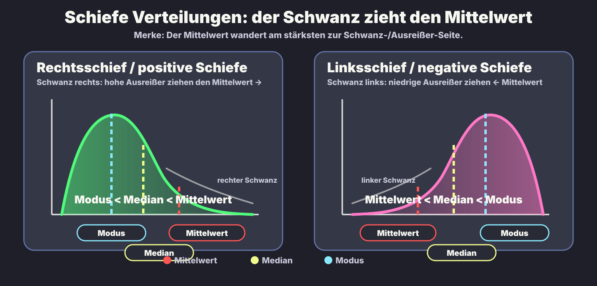

Rechtsschief
Modus < Median < Mittelwert
Langer Schwanz nach rechts: wenige hohe Werte ziehen den Mittelwert nach rechts.
Statistik · Verteilungen · Lageparameter
Die Kernidee: Der Mittelwert wird vom langen Schwanz/Ausreißern am stärksten gezogen. Der Median bleibt mittiger und robuster. Der Modus sitzt am Gipfel der Häufigkeitsverteilung.
Die Grafik ist als eigene SVG-Bilddatei eingebunden, damit du sie später direkt öffnen oder ausdrucken kannst.

Modus < Median < Mittelwert
Langer Schwanz nach rechts: wenige hohe Werte ziehen den Mittelwert nach rechts.
Mittelwert ≈ Median ≈ Modus
Bei ideal symmetrischer unimodaler Verteilung liegen alle drei ungefähr am Zentrum/Gipfel.
Mittelwert < Median < Modus
Langer Schwanz nach links: wenige niedrige Werte ziehen den Mittelwert nach links.
„Der Mittelwert läuft dem Schwanz hinterher.“
| Begriff | Was bedeutet es? | Effekt auf Lageparameter | Prüfungsfalle |
|---|---|---|---|
| Rechtsschief / positive Schiefe | Die meisten Werte liegen eher links; der lange Schwanz zeigt nach rechts. | Hohe Ausreißer ziehen den Mittelwert nach rechts. | „positiv“ bezieht sich auf die Richtung des Schwanzes, nicht darauf, dass die Daten „gut“ sind. |
| Linksschief / negative Schiefe | Die meisten Werte liegen eher rechts; der lange Schwanz zeigt nach links. | Niedrige Ausreißer ziehen den Mittelwert nach links. | Bei linksschief liegt der Mittelwert links vom Median — nicht am Gipfel. |
| Median | 50%-Punkt: Hälfte der Beobachtungen darunter, Hälfte darüber. | Weniger ausreißerempfindlich als Mittelwert. | Bei schiefen Daten oft besserer „typischer“ Wert als Mittelwert. |
| Modus | Häufigster Wert / Gipfel. | Bleibt am Peak der Verteilung. | Bei multimodalen Verteilungen kann es mehrere Modi geben; die einfache Reihenfolge gilt v. a. als Heuristik für unimodale Verteilungen. |
Viele normale Einkommen, wenige extrem hohe Einkommen. Der Durchschnitt kann höher wirken als das „typische“ Einkommen.
Viele hohe Punktzahlen, wenige sehr niedrige Ausreißer. Der Mittelwert wird nach unten gezogen.
Die Reihenfolgen sind die klassische Prüfungs-Heuristik für unimodale schiefe Verteilungen. Mathematisch können Sonderfälle abweichen, besonders bei mehrgipfligen oder diskreten Verteilungen.